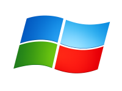
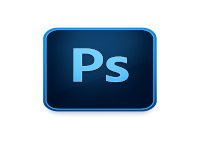
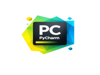

O que é Software?
Software é o conjunto de programas, instruções e dados que fazem um computador, celular ou outro dispositivo funcionar. Diferente do hardware, que corresponde às partes físicas do equipamento, o software é a parte lógica, responsável por executar tarefas e permitir que o usuário utilize os recursos do dispositivo.
Existem diferentes tipos de software, como os sistemas operacionais (Windows, Linux e Android), os programas de produtividade (Word e Excel), os navegadores de internet e os aplicativos de entretenimento. Sem o software, o hardware não seria capaz de realizar nenhuma função.
Tipos de Software
Software de Sistema
O software de sistema é o conjunto de programas responsáveis por controlar o funcionamento do computador e gerenciar seus recursos, como processador, memória, armazenamento e dispositivos conectados. Ele cria a base necessária para que outros programas possam ser executados corretamente.
O principal exemplo de software de sistema é o sistema operacional, como Windows, Linux e macOS. Também fazem parte dessa categoria os drivers de dispositivos e outros utilitários que garantem o bom funcionamento do computador.
Exemplos:

- Windows
- Linux
- macOS
- Android
Software Aplicativo
O software aplicativo é um programa desenvolvido para ajudar o usuário a realizar tarefas específicas no dia a dia. Ele permite executar atividades como criar documentos, navegar na internet, editar imagens, assistir a vídeos, ouvir músicas e se comunicar.
Alguns exemplos de softwares aplicativos são o Microsoft Word, Google Chrome, Adobe Photoshop, WhatsApp e VLC Media Player. Esses programas funcionam sobre um sistema operacional e são voltados para atender às necessidades dos usuários.
Exemplos:

- Microsoft Word
- Excel
- Google Chrome
- Photoshop
- VLC Media Player
- Software de Programação
Exemplos:
São ferramentas utilizadas para desenvolver novos programas.

- Visual Studio Code
- Eclipse
- IntelliJ IDEA
- PyCharm
- Sistemas Operacionais
Suas funções incluem:
O sistema operacional é o principal software instalado em um computador.
- Gerenciar arquivos
- Controlar o hardware
- Executar programas
- Administrar memória
- Gerenciar usuários
Exemplos:
Permite que qualquer pessoa utilize, estude, modifique e distribua o programa.
[FOTO]- Linux
- LibreOffice
- GIMP
- Software Proprietário
Exemplos:
Possui código fechado e pertence a uma empresa.
[FOTO]- Windows
- Microsoft Office
- Adobe Photoshop
- Curiosidade
Um mesmo computador pode executar milhares de softwares diferentes, mas todos dependem do sistema operacional para funcionar corretamente.